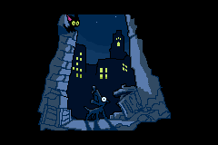

Wario Land Advance - Youki no Otakara (Japan) (Virtual Console)
SRAM 256K Save Format Mapped (Family Spec) 💾 MultiBoot
Cartridge Identity
- Game Code
AWAJ(FamilyAWA)- Header Title
WARIOLAND- Maker / Revision
01/ rev0- ROM Size
- 8.0 MiB (8,388,608 B)
- Save Media
SRAM 256K- SHA-256
188b98f7b1682a7e538102cd678570e73c6690503ce3c215d244eef9dc5481f2- Engine / SDK Group
comm-047(4 families)
Screenshots


Link Cable & Multiplayer Communications
This title contains detected communication capabilities: 💾 MultiBoot.
Detailed protocol specifications, SIO registers, Joybus commands, and MultiBoot sequences are documented in the Link & Multiplayer Reference.
- Single-Cart MultiBoot
- Single-Cartridge MultiBoot (Download Play) client/server handler · Thumb SWI 0x25 (
0xDF25):0x109e30,0x159442,0x15c59c,0x1f5976
Battery Save Format Specification (Family Shared)
This release shares its save architecture with canonical family reference Wario Land 4 (USA, Europe) (Family
AWA).
Open Family Save Format Spec (AWAE)Download save-format.json
- Canonical Specification
AWAE· 9 mapped fields · 1 verified checksum(s) · Confidence: HIGH- gbakit Built-In Support
- Built-in (AWAE)
gbakit save verify AWAE save.sav
gbakit save decode AWAE save.sav
gbakit save fix AWAE damaged.sav -o repaired.savObserved Battery Save Layout
- Fill Byte & Active Size
0x00fill · 62–62 / 32,768 B active (entropy 4.17 bits/B)- Active Offset Ranges
0x0–0x9,0xB–0x1F,0x900–0x909,0x90B–0x91F(4 total)- ASCII Magic / Headers
WARIOLANDNIPPONVer00- Observed Variable Regions
- 0 bytes across 0 spans: None
- Candidate Checksum/Counter Spans
- None
Text, Fonts & Scene Data
- Primary Text Encoding
- 16-bit / UTF-16LE text (
17ASCII strings ·6Shift-JIS runs) - Font & VWF Indicators
- VWF Width Table 1bpp Font · BIOS SWIs: BitUnPack
0x10:5· LZ770x11/12:16· Huffman0x13:9· RLE0x14/15:12 - Scene & Packaging
129ROM pointer tables (≥32 entries,3≥200) ·35relativeu32TOCs ·476OAM metasprite hits
Hardware MMIO Subsystems
ppu_display0x80006b0,0x8003a18,0x8003c90,0x8003f88,0x80042f0,0x800450c,0x80047b8,0x8005cc0,0x8090a40save_bus_sram_flash0x8000ce0,0x8000e54,0x8001038
Regional Variants & Revisions (Family AWA)
- Waliou Xunbao Ji (China) (
AWAC, 8 MiB) - Wario Land 4 (USA, Europe) (
AWAE, 8 MiB) - Wario Land 4 (USA, Europe) (Virtual Console) (
AWAE, 8 MiB) - Wario Land Advance - Youki no Otakara (Japan) (
AWAJ, 8 MiB)